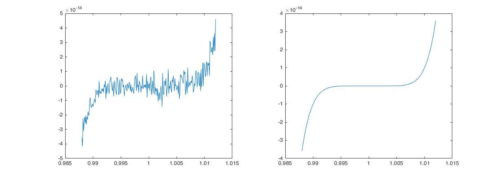

Laboratorio 2 : L’Aritmetica di Precisione Finita#
Ricordiamo che l’artimetica floating point (floating-point arithmetic) è l’artimetica che fornisce una rappresentazione approssimata dei numeri reali per supportare un compromesso tra l’intervallo dei numeri rappresentati e la precisione ottenibile nei calcoli. Per questo motivo, il calcolo in virgola mobile viene spesso utilizzato in sistemi in cui si deve coniugare la rappresentazione di numeri in un ampio range richiedendo tuttavia tempi di elaborazione rapidi.
Un numero in virgola mobile è rappresentato approssimativamente da un numero fisso di cifre significative (il significando) e scalato usando un esponente in una qualche base fissata. Tale base è normalmente due, dieci o sedici. Un numero che può essere rappresentato esattamente è della forma seguente:
Di tutte le possibili costruzioni di questo tipo, noi adoperiamo quella codificata nello standard IEEE-754 [IEEE75419], in cui (la maggior parte dei) i numeri floating point sono normalizzati, cioè possono essere espressi come
dove \(f\) è detta la mantissa, e deve essere rappresentabile con al più 52 bits, cioè \(2^{52}f\) è un intero nell’intervallo \(0 \leq 2^{52} f < 2^{53}\), abbiamo fissato la base a \(2\) e chiamato l’esponente \(e\).
Il testo di riferimento per questi argomenti è [Hig02].
MATLAB implementa diversi formati di numeri floating point e interi; si
veda la Tabella 8 per i diversi tipi di interi disponibili e le
relative funzioni di conversione. In generale assumeremo di star lavorando con
l’aritmetica in precisione doppia (double): cioè di usare una rappresentazione
con 64 bits. Specificamente, il bit 63 assume valore \(0\) o \(1\) per indicare
il segno (\(0\) se positivo, \(1\) se negativo). I bits da 62 a 52 contengono
l’esponente \(e\), mentre i bits da 51 a 0 contengo la mantissa \(f\) come illustrato
in (2).
Avvertimento
In alcuni casi MATLAB deciderà autonomamente se la variabile che stiamo usando
è un intero e applicherà in tal caso l’aritmetica relativa. Alcune funzioni
utili a verificare che tipo di aritmetica stiamo usando sono le funzioni
isfloat e isinteger che restituiscono vero (\(1\)) se l’argomento è
rispettivamente un floating point (single o double), oppure una delle
tipologie di intero, falso (\(0\)) altrimenti.
Rappresentazione dei numeri di macchina#
In generale non tutti i numeri potranno essere espressi nella forma (1), possiamo scegliere ad esempio il numero \(4/3\) che non può essere scritto esattamente nella forma \(s \times 2^k\). Se proviamo ad eseguire l’operazione
e = 1 - 3*(4/3 - 1)
da cui ci aspetteremo di ottenere uno \(0\), otteniamo invece
e =
2.2204e-16
che è un errore della grandezza della precisione di macchina per l’aritmetica in virgola mobile adoperata da MATLAB.
In maniera analoga, possiamo considerare un altro numero che non è esattamente rappresentato in macchina \(0.1\). Se lo sommiamo \(10\) volte in aritmetica esatta ci aspettiamo di ottenere \(1\):
a = 0.0;
for i = 1:10
a = a + 0.1;
end
Tuttavia se proviamo a fare la verifica leggiamo
a == 1
ans =
logical
0
Ed infatti,
abs(a-1)
ans =
1.1102e-16
che è di nuovo dell’ordine della precisione di macchina.
Suggerimento
Quando impostiamo dei confronti di «uguaglianza» tra numeri floating point la procedura corretta è sempre quella di controllare la differenza in valore assoluto tra il valore calcolato ed il risultato aspettato in termine della precisione di macchina in uso:
abs(1-a) < eps
ans =
logical
1
che ci restituisce il valore aspettato, dove eps è spesso chiamato floating-point
zero.
All’altro estremo del range dinamico dei numeri rappresentati osserviamo anche il problema del «diradarsi» dei numeri di macchina, infatti sfruttando la definizione di numero normalizzato osserviamo facilmente che:
(2^53 + 1) - 2^53
ans =
0
Possiamo farci dire da MATLAB quali sono il più piccolo ed il più grande numero
reale rappresentato richiamando le variabili realmin e realmax:
>> realmin
ans =
2.2251e-308
>> realmax
ans =
1.7977e+308
Qualunque operazione generi un numero maggiore di realmax provocherà un errore
di overflow, qualunque operazione generi un numero minore di realmin genererà
un errore di underflow. In MATLAB questo è rappresento dai valori +Inf e -Inf:
realmax + .0001e+308
ans =
Inf
-realmax - .0001e+308
ans =
-Inf
Avvertimento
Alcune macchine permettono il trattamento di alcuni casi eccezionali di numeri
floating point, cioè l’esistenza di numeri denormalizzati (o subnormali).
Questi si trovano nell’intevallo [eps*realmin,realmin].
L’ultimo caso che vogliamo discutere riguarda l’uso delle funzioni trigonometriche. Dalla goniometria di base sappiamo che \(\sin(k \pi) = 0\) per ogni \(k\) dispari. Tuttavia è immediato osservare che
sin(3*pi)
ans =
3.673940397442059e-16
Poiché di \(\pi\) abbiamo solo un”approssimazione, l’algoritmo che calcola la funzione \(\sin(x)\) propaga l’errore commesso nell’argomento anche sulla valutazione restituendoci un errore finale dell’ordine della precisione di macchina.
D’altra parte, se usiamo la variante della funzione che lavora con i gradi, osserviamo che
sind(3*180)
ans =
0
questa volta l’input della funzione è un intero, per cui non commettiamo errore di troncamento e otteniamo alla fine il valore esatto.
Associatività delle operazioni#
Mentre l’operazione di somma e di prodotto sono garantite essere commutative nello standard IEEE, l’operazione di soma tra floating point è sicuramente non associativa. Si consideri infatti l’esempio:
b = 1e-16 + 1 - 1e-16;
c = 1e-16 - 1e-16 + 1;
b == c
ans =
logical
0
Si osserva che se andiamo a valutare la differenza tra le due procedure
>> abs(b-c)
ans =
1.1102e-16
che è di nuovo dell’ordine della precisione di macchina.
Suggerimento
Quando si calcola la somma di più termini di ordine diverso è opportuno valutare l’accumulazione ed agire di conseguenza.
Per correggere il problema precedente si può implementare l”algoritmo delle somme compensate di Kahan, per cui uno pseudocodice è dato da:
function KahanSomma(input)
somma = 0.0 // variabile che conterrà la somma finale
c = 0.0 // Compensazione per i bits che altrimenti andrebbero persi.
for i = 1 to length(input) do // L'array che ha in input le quantità da sommare va da input(1)
// fino a input(length(input))
y = input(i) - c // Al primo passaggio c è zero
t = somma + y // Purtroppo, somma è "grande", y è piccolo, quindi alcuni bits
// sono persi, ma non per sempre...
c = (t - somma) - y // (t - somma) cancella la parte di ordine alto di y; sottrarre y
// recupera la parte "piccola" di y
somma = t // In aritmetica di precisione infinita c dovrebbe essere
// sempre zero
// Alla prossima iterata la parte "persa" verrà aggiunta ad y in un nuovo
// tentativo di recuperarla.
end for
return somma
Esercizio
Si implementi l’algoritmo KahanSomma in una funzione MATLAB e se ne verifichino le proprietà numeriche.
function [somma] = KahanSomma(input)
%%KAHANSOMMA algoritmo delle somme compensate di Kahan
end
Che possiamo testare sull’esempio precedente costruendo uno script con
clear; clc;
input = [ 1e-16 +1 -1e-16];
somma1 = input(1)+input(2)+input(3);
somma2 = sum(input);
somma3 = KahanSomma(input);
e confrontando la differenza in valore assoluto tra i tre valori somma1, somma2
e somma3. Cosa si osserva?
Per questo algoritmo è possibile dare una limitazione dell’errore commesso. Se chiamiamo
la somma calcolata in precisione infinita, allora con un algoritmo otteniamo in genere \(S_n + E_n\) dove l’errore \(E_n\) può essere limitato per l’algoritmo delle somme compensate da
dove \(\varepsilon\) è la precisione di macchina. Più in generale, siamo di solito interessati all’errore relativo, cioè alla quantità
dove la quantità \(\kappa = \frac{\sum_{i=1}^{n} |\text{input}_i|}{\left| \sum_{i=1}^{n} \text{input}_i| \right|}\) rappresenta il numero di condizionamento dell’operazione di somma. Esistono algoritmi per la somma che esibiscono migliori limitazioni dell’errore [Kle06, Neu74] , per i nostri scopi illustrativi questa versione è sufficiente.
Errori di cancellazione/roundoff#
Un altro caso in cui calcoli avventati possono avere effetti catastrofici è quello delle sottrazioni eseguite con operandi quasi uguali, è facile che l’annullamento si verifichi in modo imprevisto. Consideriamo l’esempio:
sqrt(1e-16 + 1) - 1
ans =
0
in cui osserviamo una cancellazione causata da swamping, che è un fenomeno analogo a quello che abbiamo visto per l’associatività della somma. Stiamo osservando una perdita di precisione che rende l’aggiunta insignificante. È possibile introdurre delle correzioni algoritmiche in maniera analoga a quanto fatto per la somma anche per altre funzioni, per corregere l’esempio visto sopra possiamo usare la seguente riscrittura:
ed usare le funzioni expm1 e log1p di MATLAB che ci permettono di risolvere
il problema di cancellazione:
expm1(0.5*log1p(1e-16))
in particolare
expm1calcola \(\exp(x)-1\) compensando per il roundoff in \(\exp(x)\),log1pcalcola \(\log(1+x)\) evitando di calcolare \(1+x\) per valori «piccoli» di \(x\).
Consideriamo un altro esempio, produciamo uno script che valuti il seguente polinomio
nell’intervallo \([0.988,1.012]\) su di una griglia con scansione \(10^{-4}\). Come si vede dalla figura al margine questo produce il plot di una funzione che non sembra proprio essere un polinomio: non è liscia! Stiamo osservando di nuovo degli errori di roundoff dati dalla sottrazione di numeri dello stesso ordine (elevato), che infatti (come si legge dalla scala sull’asse delle \(y\)) hanno un ordine di \(10^{-14}\). Se guardiamo meglio al polinomio in (3) possiamo osservare che questo non è nient’altro che l’espansione di \(p(x) = (x-1)^7\), provate a fare un plot sullo stesso intervallo e confrontiamolo con il precedente

Fig. 3 Confronto del grafico del polinomio (3) calcolato nella forma (3) e a partire dalla forma \(p(x) = (x-1)^7\).#
Condizionamento di un sistema lineare#
Ricordiamo che il numero di condizionamento associato all’equazione lineare \(A \mathbf{x} = \mathbf{b}\) fornisce un limite sulla precisione della soluzione \(\mathbf{x}\) dopo che un qualunque algoritmo sarà stato applicato per la sua approssimazione ed in maniera indipendente dalla precisione floating point usata.
Sia \(\mathbf{e}\) l’errore commesso rispetto a \(\mathbf{b}\), assumiamo che \(A\) sia non singolare, allora l’errore sulla soluzione \(A^{-1} \mathbf{b}\) è dato da \(A^{-1} \mathbf{e}\). Allora il rapporto tra gli errori relativi è dato da
per cui possiamo esibire la limitazione per il termine destro come
Consideriamo ora il seguente esempio artificiale
Proviamo a risolvere direttamente con MATLAB il sistema lineare
A = [4.1 2.8; 9.7 6.6];
b = A(:,1);
x = A\b
da cui otteniamo come risposta:
x =
1.000000000000002
-0.000000000000003
Ritracciamo i passi del bound sul termine noto, per cui introduciamo una perturbazione di \(0.01\) sulla prima componente di \(\mathbf{b}\) e paragoniamo le due soluzioni
b2 = [4.11; 9.7];
x2 = A\b2
da cui otteniamo
x2 =
0.339999999999957
0.970000000000064
Andiamo ora a verificare la limitazione che abbiamo mostrato in termini del
numero di condizionamento. A questo scopo facciamo uso del comando cond
cond Condition number with respect to inversion.
cond(X) returns the 2-norm condition number (the ratio of the
largest singular value of X to the smallest). Large condition
numbers indicate a nearly singular matrix.
cond(X,P) returns the condition number of X in P-norm:
NORM(X,P) * NORM(INV(X),P).
where P = 1, 2, inf, or 'fro'.
Pericolo
Il calcolo del numero di condizionamento per una matrice è bene che sia eseguito
tramite la funzione cond, la forma NORM(X,P) * NORM(INV(X),P) nella
documentazione è identificativa di ciò che stiamo calcolando, ma non è
rappresentativo del modo in cui è realmente calcolato.
Calcoliamo quindi
kappa = cond(A);
bound = kappa*norm(b-b2)/norm(b);
errore_relativo = norm(x-x2)/norm(x);
e osserviamo che
bound =
1.54117722269025
errore_relativo =
1.173243367763135
che quindi ci mostra che l’errore che abbiamo commesso è abbastanza vicino alla limitazione data dalla (4).
Avvertimento
Per matrici di grandi dimensioni la funzione cond può risultare estremamente
lenta o andare out of memory. Per questo motivo sono disponibili altre
due funzioni chiamate rcond e condest.
La funzione rcond(A) calcola il reciproco di cond(A,1), per cui più questo è
vicino a \(0\) più la matrice è malcondizionata, più questo è vicino a \(1\) più
la matrice è ben condizionata. Questa funzione si basa sulla libreria LAPACK.
Questa è una libreria di software in Fortran 90 che produce le implementazioni
standard delle operazioni dell’algebra lineare per matrici dense.
La funzione condest calcola un limite inferiore per il numero di condizionamento
in norma \(1\) di una matrice quadrata \(A\). Informazioni sull’algoritmo applicato
per ottenere questa approssimazione si trovano in [Hag84] e [HT00].
Precisione mista#
La rivoluzione delle applicazioni di «apprendimento automatico» (machine learning) e dell’intelligenza artificiale (AI) ha suscitato negli ultimi anni un interesse per lo sviluppo di aritmetica a mezza precisione (formato in virgola mobile a 16 bit) che potesse rispondere al problema della necessità di
avere alte prestazioni nelle fasi di addestramento delle reti neurali. L’idea
nasce dall’osservazione (per lo più empirica) che dice che la maggior parte di
queste applicazioni non richiede necessariamente l’accuratezza della precisione singola (single) o doppia (double). La mezza precisione (half) ha quindi
un’aritmetica più veloce e produce una riduzione della memoria e del traffico di un fattore \(2\times\) contro il formato precisione in singola cifra e di un fattore \(4\times\) contro la doppia precisione.
In MATLAB questo è disponibile con il comando half per cui una buona parte delle
funzioni di default è resa disponibile. Si può interrogare l’inseme delle funzioni
disponibili con il comando:
methods(half(1))
che vi restituirà una lista del tipo:
Methods for class half:
abs asinh complex double floor int16 islogical le logical mod plot3 real scatter3 subsasgn uint16 ylim
acos atan conj end fplot int32 isnan length lt mrdivide plotmatrix rem sin subsref uint32 zlim
acosh atanh cos eps ge int64 isnumeric line max mtimes plus reshape single sum uint64
all bar cosh eq gt int8 isreal log mean ndims pow10 rgbplot sinh tan uint8
any barh cospi exp half isempty isscalar log10 min ne pow2 round sinpi tanh uminus
area ceil ctranspose expm1 hypot isfinite isvector log1p minus numel prod rsqrt size times uplus
asin colon display fix imag isinf ldivide log2 mldivide plot rdivide scatter sqrt transpose xlim
Per estrarre performance dall’utilizzo della precisione half e, più in
generale, dall’utilizzo contemporaneo di dati in più precisioni (mixed precision) è necessario avere dell’hardware che possa lavorare in maniera
diretta in questo formato, cioè senza adoperare continuamente conversioni o simulare la precisione ridotta. Per le alte performance parliamo di oggetti come
le NVIDIA GPUs (CUDA Capabilitiy \(\geq 7.0\)), Google TPUs e diversi tipi di
FPGA più o meno sperimentali.
MATLAB ha un supporto limitato (ma in espansione) per lavorare sulle GPU, non esploreremo oltre questa direzione, ma è utile che sappiate che esistono questi possibili sviluppi.
Bibliografia#
William W. Hager. Condition estimates. SIAM J. Sci. Statist. Comput., 5(2):311–316, 1984. URL: https://doi.org/10.1137/0905023, doi:10.1137/0905023.
Nicholas J. Higham. Accuracy and stability of numerical algorithms. Society for Industrial and Applied Mathematics (SIAM), Philadelphia, PA, second edition, 2002. ISBN 0-89871-521-0. URL: https://doi.org/10.1137/1.9780898718027, doi:10.1137/1.9780898718027.
Nicholas J. Higham and Françoise Tisseur. A block algorithm for matrix 1-norm estimation, with an application to 1-norm pseudospectra. SIAM J. Matrix Anal. Appl., 21(4):1185–1201, 2000. URL: https://doi.org/10.1137/S0895479899356080, doi:10.1137/S0895479899356080.
A. Klein. A generalized Kahan-Babuška-summation-algorithm. Computing, 76(3-4):279–293, 2006. URL: https://doi.org/10.1007/s00607-005-0139-x, doi:10.1007/s00607-005-0139-x.
A. Neumaier. Rundungsfehleranalyse einiger Verfahren zur Summation endlicher Summen. Z. Angew. Math. Mech., 54:39–51, 1974. URL: https://doi.org/10.1002/zamm.19740540106, doi:10.1002/zamm.19740540106.
IEEE-754. IEEE 754-2019, Standard for Floating-Point Arithmetic. IEEE, New York, NY, USA, June 2019. ISBN 1-5044-5925-3 (print), 1-5044-5924-5 (e-PDF). URL: https://ieeexplore.ieee.org/stamp/stamp.jsp?arnumber=8766229, doi:https://doi.org/10.1109/IEEESTD.2019.876622.